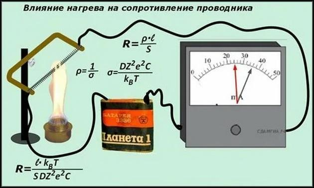

Установка

Задания:
- Задание 1. Запишите в таблицу температуру проводника (свинец).
- Задание 2. Включите омметр. Запишите в таблицу сопротивление проводника.
- Задание 3. Включите горелку и нагрейте металл до 90 °С.
- Задание 4. Запишите в таблицу температуру проводника.
- Задание 5. Запишите в таблицу сопротивление проводника.
- Задание 6. Выключите горелку. Смените металл на алюминий.
- Задание 7. Запишите в таблицу температуру проводника.
- Задание 8. Запишите в таблицу сопротивление проводника.
- Задание 9. Включите горелку и нагрейте металл до 90 °С. Запишите температуру.
- Задание 10. Запишите сопротивление.
- Задание 11. Выключите горелку. Смените металл на железо.
- Задание 12. Запишите в таблицу температуру проводника.
- Задание 13. Запишите в таблицу сопротивление проводника.
- Задание 14. Включите горелку и нагрейте металл до 90 °С. Запишите температуру.
- Задание 15. Запишите сопротивление.
- Задание 16. Выключите горелку и омметр. Можно гулять 😊.